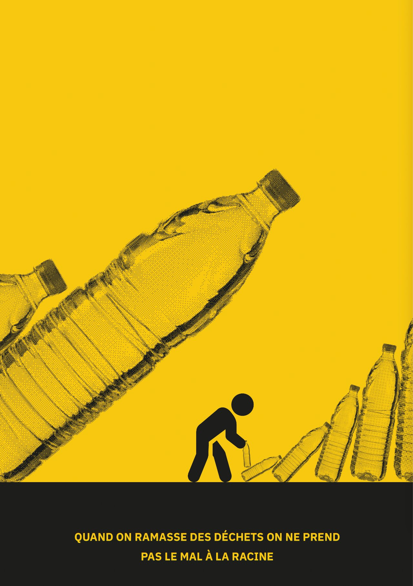
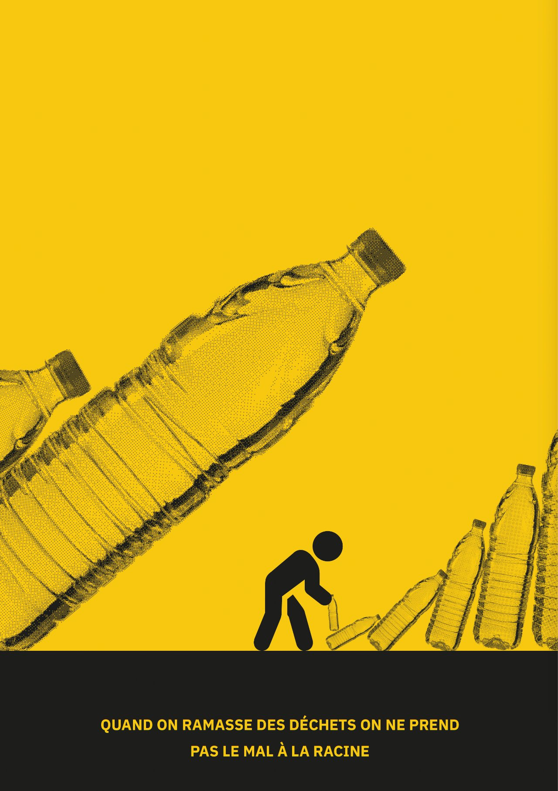
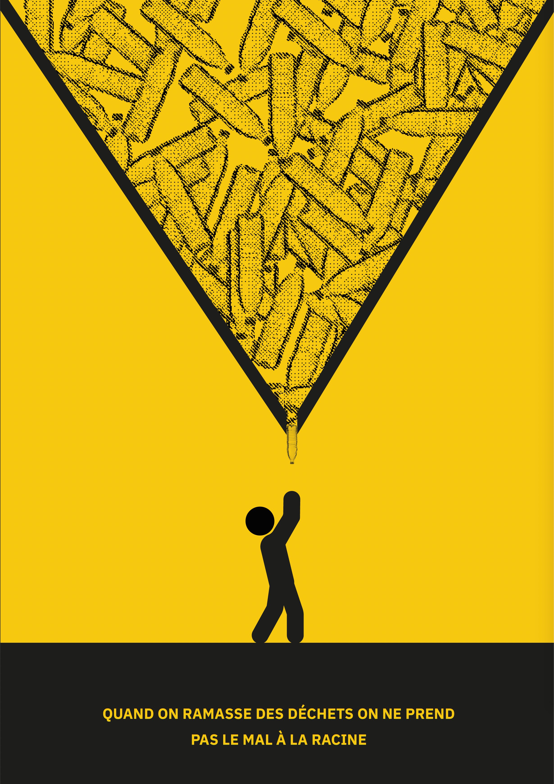
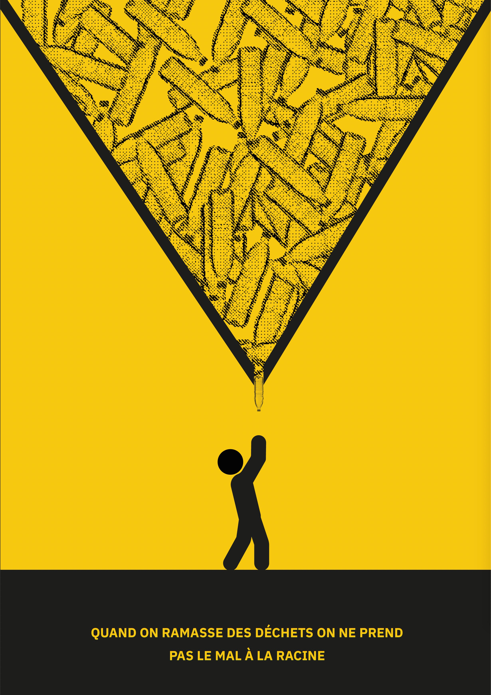
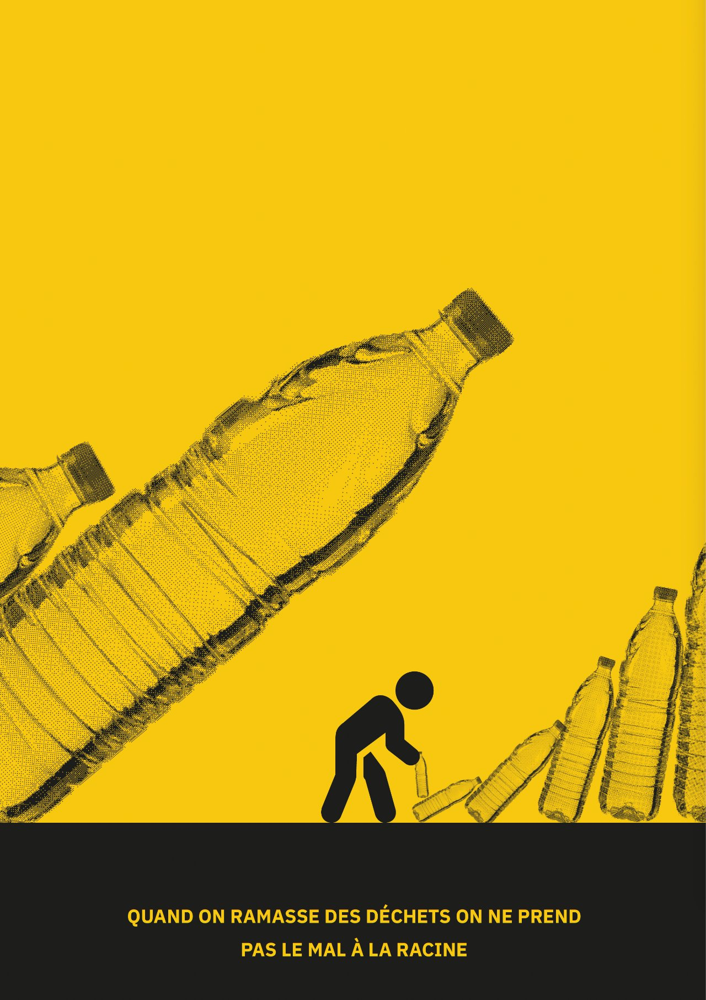
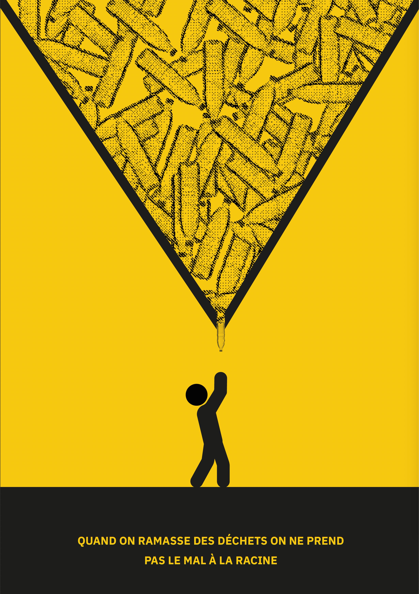

 

Réalisation d’une série d'affiches pour la Recyclerie. La recyclerie est un tiers lieu qui prônent des valeurs très contemporaines d'éco responsabilité et d’upcyclingue. Dans le cadre d’une exposition qu vise à sensibiliser le grand public aux problématiques climatiques j’ai réalisé trois affiche pour éveiller au danger qui nous attendent “Quand on ramasse les déchets on ne prend pas le mal a la racine”, cette phrase extraites des podcast diffusé par la recyclerie m’a donné envie d’exprimer l’idée de l’absurdité de ce geste si une action plus radical ne suit pas et du danger du plastique qui s’amasse malgrés nos efforts.
Ma première affiche se concentre sur l’absurdité du geste à l'aide d’une comparaison avec le mythe de Sisyphe. Un geste vain et interminable qu’on va recommencer encore et encore si on ne s’attaque pas à l'origine du problème. Le but est de faire prendre conscience au lecteur que le geste doit s’accompagner d’une action plus radicale où le geste doit être répété pour toujours. L’autre affiche elle tente plutôt de nous faire réaliser qu’on ne répètera pas ce geste pour toujours car nous finiront écrasés par la masse de déchets qui nous menace. Et ce parce que le geste bien que bénéfique ne suffit pas à nous sortir du problème.

